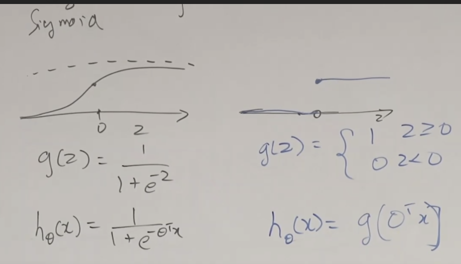

Lec 04-Perceptron - GLM
Contents
Lec 04-Perceptron - GLM#
Outline#
Perceptron
Exponential Family
Generalized Linear Models(GLM)
Softmax Regression(Multiclass classification)
Logistic Regression (Recap)#
Logistic Regression uses sigmoid function
ranges from \(-\infty\) to \(\infty\), with values ranging from 0 to 1, which is probability
\[ g(z) = \frac{1}{1+e^{-z}} \]At z=0, g(z) = 0.5
As z tends to \(-\infty\), g converges to 0
As z tends to \(\infty\), g converges to 1
variant of this is perceptron
Perceptron#
is not used widely because it does not have a probabilistic interpretation
is taught for historical reasons
logistic regression is a softer version of perceptron
\[\begin{split}\begin{equation} g(z) = \begin{cases} 1 & \text{if z $\ge$ 0}\\ 0 & \text{if z $\lt$ 0} \end{cases} \end{equation}\end{split}\]
hypothesis function
 $\tiny{\text{YouTube-Stanford-CS229-Andrew Ng/Anand Avati}}$\(h_{\theta}(x) = g(\theta^{T}x)\)
\(\theta_{j} := \theta_{j} + \alpha(y^{(i)} - h_{\theta}(x^{(i)}))x_{j}^{(i)}\)
In this equation \((y^{(i)} - h_{\theta}(x^{(i)}))\) is scalar, because \(y^{(i)}\) is either 0/1 and so will be \(h_{\theta}(x^{(i)})\)
So the result can be either \(\begin{equation} = \begin{cases} 0 & \text{if algorithm got it right}\\ +1 & \text{if wrong \)y^{(i)} = 1\(}\\ -1 & \text{if wrong \)y^{(i)} = 0\(} \end{cases} \end{equation}\)
A result of 0 means, if the example is already classified, you do nothing
A result of +1/-1 means, the example is misclassified, and you either add/subtract a small component of the example (\(\alpha x_{j}^{(i)}\))
This will shift the decision boundary correctly
Exponential Family#
its a class of probability distribution
they are closely related to GLM
PDF:
\(P(y;\eta) = b(y) \text{exp}[\eta^{T}T(y) - a(\eta)]\)
y: data - use it to model output of data
\(\eta\): natural parameter
\(T(y)\): sufficient statistics, cannot involve \(\eta\)
b(y): base measure, cannot involve \(\eta\)
\(a(\eta)\): log partition function
\(P(y;\eta) = \frac{b(y) e^{(\eta^{T}T(y))}}{e^{a(\eta)}}\)
\(a(\eta)\): is also called normalizing constant of probability distribution
Types of exponential family#
Bernoulli distribution#
Bernoulli distribution belongs to the exponential family
PDF
\(P(y; \theta) \)
\(= \phi^{y}(1-\phi)^{1-y}\)
\( = exp(log(\phi^{y}(1-\phi)^{1-y}))\)
\( = exp[log(\frac{\phi}{1-\phi})y + log(1-\phi)]\)where
\(b(y) = 1\)
\(T(y) = y\)
\(\eta = log(\frac{\phi}{1-\phi}) \Rightarrow \phi = \frac{1}{1+e^{-\eta}}\)
\(a(\eta) = -log(1-\phi) = -log(1-\frac{1}{1+e^{-\eta} }) = log(1+e^{\eta})\)We are linking the canonical parameters to natural parameters here
Gaussian distribution#
Gaussian distribution - with fixed variance
Assume \(\sigma^{2} = 1\)
PDF
\(P(y; \mu)\)
\(= \frac{1}{\sqrt(2\pi)}exp(-\frac{(y-\mu)^{2}}{2})\)
\( = \frac{1}{\sqrt(2\pi)} e^{-\frac{y^{2}}{2}}exp(\mu y - \frac{1}{2}\mu ^{2}) \)where
\(b(y) = \frac{1}{\sqrt(2\pi)} e^{-\frac{y^{2}}{2}}\)
\(T(y) = y\)
\(\eta = \mu\)
\(a(\eta) = \frac{\mu^{2}}{2} = \frac{\eta^{2}}{2}\)
Other distributions:#
How do you decide which distribution to use?
The task in reality tells/influences you which distribution to use
Real: Gaussian
regression - predict house prices
Binary: Bernoulli
classification
Integer Count: Poisson
number of visitors to a web page
Real positive: Gamma, Exponential
Prob distribution over other distribution: Beta, Dirichlet (used mostly in Bayesian statistics)
Properties of Exponential family:#
If you perform maximum likelihood MLE wrt \(\eta \Rightarrow\) concave
NLL is convex (negative log likelihood)
\(E[y;\eta] = \frac{\partial}{\partial \eta} a(\eta)\)
\(Var[y;\eta] = \frac{\partial^{2}}{\partial \eta^{2}} a(\eta)\)
Generally to calculate distribution properties (mean and variance), you need to integrate, in exponential family you differentiate
Generalized Linear Models (GLM)#
Natural extension of exponential family - to include covariance/input features. Powerful models can be made by using this.
Assumption/Design choices (to move from exponential family to GLM):
i) \(y | x; \theta \sim \) Exponential family\((\eta) \)
ii) \(\eta = \theta^{T}x \) where \( \theta \in \mathbb R^{n}, x \in \mathbb R^{n}\)
iii) At test time: Output E[y|x; \(\theta\)]
\(h_{\theta}(x) = E[y|x; \theta]\) - is the hypothesis function
if we plugin exponential family as Gaussian, the hypothesis will turn out to be Gaussian hypothesis of linear regression
if we plugin exponential family as Bernoulli, the hypothesis will turn out to be Bernoulli hypothesis of logistic regression
One way to visualize this is (as in figure below)
there is a model (linear model here)
given x, there is a learnable parameter \(\theta\), and \(\theta^{T}x\) will give you a parameter \(\eta\)
there is a distribution
the distribution is a member of exponential family and parameter for this distribution is output of linear model
we choose exponential family based on the data that we have (classification problem, regression problem, or other)
we will choose appropriate b, a and T based on distribution of your choice
expectation
During test time
\(E[y; \eta] = E[y; \theta^{T}x] = h_{\theta}(x)\) - this is the hypothesis function
Caveat:
the parameter that we are learning during gradient descent is \(\theta\)
we dont learn anything of the exponential family eg., \(\mu, \sigma^{2}, \eta\)
we learn \(\theta\), that is part of model and not part of distribution
During train time
we perform gradient ascent/descent on the log probability with y where natural parameter was reparameterized with the linear model
the gradient ascent is done by taking gradients on \(\theta\)
Question
Are we training \(\theta\) to predict the parameter of exponential family distribution whose mean is our prediction for y
True
This is the reason, or how GLMs are an extension of exponential families. You reparameterize the parameters with the linear model and you get a GLM.
GLM training#
At train time, we perform maximum likelihood over the log probability of y with respect to \(\theta\)
Learning update rule
plugin appropriate \(h_\theta(x)\) depending on the choice of distribution and you can start learning
the learning update rule is the same for all GLMs, for classification or regression, just the \(h_{\theta}\) varies.
\( \theta _{j} := \theta _{j} - \alpha (h_{\theta}(x^{(i)}) - y^{(i)}).x_{j}^{(i)} \)
Terminology#
\(\eta\) - natural parameter
\(\mu = E[y_{i}; \eta] = g(\eta)\) - natural parameter to the mean of the function - canonical response function
\(\eta = g^{-1}(\mu)\) - canonical link function
\(g(\eta) = \frac{\partial}{\partial \eta}a(\eta)\)
There are 3 types of parameterization being used here:
i) Model parameter - \(\theta\) - this is the only parameter that is learned
ii) Natural parameter - \(\eta\)
iii) Canonical parameter\(\phi\) - Bernoulli
\(\mu, \sigma^{2}\) - Gaussian
\(\lambda\) - Poisson
How are they linked
Model parameter and Natural parameter are linked by design choice (\(\theta^{T}x\))
g links natural parameter to canonical parameter
\(g^{-1}\) links canonical parameter to natural parameter
Logistic Regression
\(h_{\theta}(x) = E[y|x;\theta] = \phi = \frac{1}{1+e^{-\eta}} = \frac{1}{1+e^{-\theta^{T}x}} \)
Are GLM used for classification/regression
depends on choice of distribution
GLM just a general way of model data which can be binary, real, exponential or others
Assumptions
Regression
At every given x, there is a y given x which is Gaussian and is parameterized by \(\theta^{T}x\) as mean
The assumption is there was a Gaussian distribution and you sampled the value from this Gaussian distribution
We assume that the data was generated as above and we will work backward to find \(\theta\), which will give us boundary condition
Softmax Regression#
Cross entropy minimization
Multiclass classification
can work over thousand of classes
Type of GLM
one vector per class
generalization of logistic regression, with different set of parameters per class
Goal is to:
Start from this data, learn a model that can given a new data point, make a prediction of its class
Notation
k - # of classes
\(x^{(i)} \in \mathbb R^{n}\)
Label: \(y = [\{0,1\}^{k}]\)
For example: [0, 0, 0, 1, 0] - assuming there are 5 class here
label is a vector which indicates which class the x corresponds to
each element in the vector corresponds to a vector
there will be only 1 in the label vector
Each class has its own set of parameters
\(\theta_{class} \in \mathbb R^{n}\)
Example
For a given x, \(\theta_{i}^{T}x\) (logit space) will have a range of \(-\infty\) to \(\infty\)
goal is to get probability distribution over classes
inorder to do that, we exponentiate the logits (\(exp(\theta_{i}^{T}x)\)), which makes everything positive
then we normalize this, by the sum of all \(\frac{e^{\theta_{i}^{T}x}}{\sum_{all\space classes} e^{\theta_{i}^{T}x}}\)
this gives us a probability distribution \(\hat{p}(y)\) over all the classes
minimize the distance between true label and learned label distribution using cross entropy
minimize the distance between these two distributions or minimize the cross entropy (\(p, \hat p \))
Cross entropy(\(p, \hat p\))
\( = -\sum\limits_{y \in \{\Delta, \square, \circ \} } p(y) \text{log}\hat p(y)\)
\( = - log\space\hat p(y_{\Delta})\) - associated class here is triangle
\( = - log \frac{e^{\theta_{\Delta}^{T}x}}{\sum_{c \in \{\Delta, \square, \circ \}} e^{\theta_{c}^{T}x}}\)treat this as a loss and apply gradient descent wrt parameter